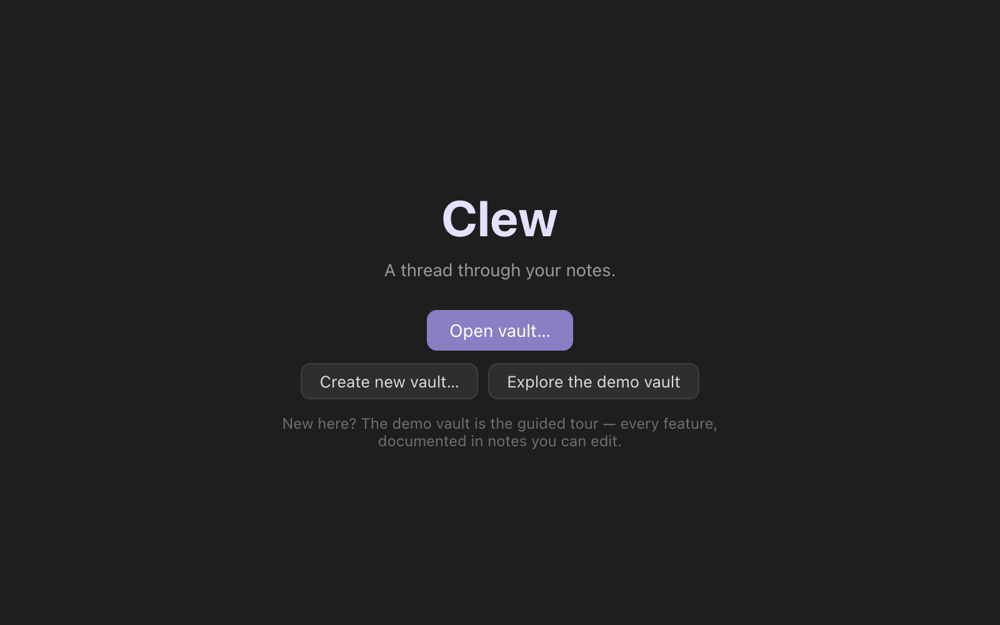

Getting started
Getting started
This chapter takes you from nothing to a working vault: installing Clew on macOS, Windows, or Linux (or building it from source), understanding what happens the first time it launches, opening a folder of notes, and finding your way around the window. It ends with the two example vaults that ship in the repository — the fastest way to see what Clew can actually do — and a table of the handful of keys worth learning on day one.
Downloading and installing
Clew is free software: there is no account to create, no licence key to enter, and no telemetry to opt out of. The current release is version 0.9.0, and the download section of the website offers a build for each platform.
macOS
The macOS build is a single universal disk image,
Clew-0.9.0-universal.dmg, which runs natively on both Apple
Silicon and Intel Macs. It is signed with a Developer ID
certificate and notarized by Apple, so it opens without a Gatekeeper
warning. Installation is the usual dance: open the disk image and drag
Clew.app into your Applications folder.
Windows
The Windows build is an NSIS installer, Clew Setup
0.9.0.exe, for 64-bit Windows 10 and 11. It is a
conventional step-through installer — not a one-click one — and lets
you choose the installation directory. The installer is not
code-signed, so Windows may interpose a SmartScreen warning before it
runs; that warning reflects the missing signature, not anything the
installer does.
Linux
Linux gets two artefacts, both x64: a portable AppImage,
Clew-0.9.0.AppImage, and a Debian package,
clew_0.9.0_amd64.deb, for Debian and Ubuntu. The AppImage
needs no installation — mark it executable (chmod +x
Clew-0.9.0.AppImage) and run it. The .deb installs
through your package manager, for example sudo apt install
./clew_0.9.0_amd64.deb.
Building from source
Clew builds with Node 20 or later and nothing exotic: plain JavaScript, no framework, no TypeScript, bundled by esbuild. The rendering engine (jmarkdown) is vendored into the repository, so a fresh clone builds without any external checkout.
You type (in a terminal)
git clone <repository-url> clew && cd clew
npm install
npm run dev # develop: build watch + Electron with live reload
npm run package # build the app for your platform
npm run dev is the development loop: it builds everything,
starts Electron, and reloads the window as you edit the source.
npm test runs the unit-test suite. For distributable
artefacts there are dedicated scripts: npm run package
produces an unsigned macOS app for local testing, npm run
package:dmg adds a disk image, and npm run
package:win and npm run package:linux cross-build
the Windows installer and the Linux AppImage and .deb.
Everything lands in the out/ directory.
First launch
Clew remembers which vaults were open when it last quit and reopens every one of them at launch, each in its own window. The first time you run it there is nothing to restore, so you get a single welcome window instead, with three ways in: Open vault… for a folder of notes you already have (an Obsidian vault included), Create new vault… for a fresh one, and Explore the demo vault — the guided tour, and the right first click if you are new (see below). Once you have opened a vault or two, the welcome window also lists your recent vaults, so a later fresh window is one click from anywhere you have been.

The restore set is exactly the windows you left open. Closing a vault's window by hand takes that vault out of the set — Clew will not resurrect it next launch — while quitting the app with windows open keeps them all for next time.
Opening a vault
A vault is any folder of Markdown files. There is no import step and no registration: choose File → Open Vault… (⌘⇧O), point the dialog at a folder, and Clew opens it. The dialog can also create a fresh folder on the spot if you are starting from nothing. Each vault opens in its own window; opening a vault that is already open somewhere focuses its existing window rather than duplicating it. The next chapter, Vaults and files, covers what a vault is on disk in full.
.obsidian/ folder and
keeps all of its own state in a separate .clew/ folder,
so your Obsidian setup survives untouched and the two apps can even
have the same vault open at the same time.
A tour of the window

A vault window has five regions, and every part of it earns a chapter later in this manual; this is the aerial view.
The title bar across the top names the active note and the vault it belongs to.
The left sidebar holds four tools, switched by the small tabs at its top: Files (the file explorer), Search (full-text search across the vault), Marks (bookmarked notes), and Diary (the daily-notes calendar). The explorer is where you will live at first: click a note to open it, right-click for file operations, drag to move things.
The center is the workspace: a tab strip above the open note. Tabs can be dragged to reorder them or to split the workspace into panes, each pane with its own tabs and history — the full story is in Navigation, tabs and splits. A note tab is always in one of two modes: source mode, the editor, or reading mode, the note rendered by the typesetting engine. ⌘E toggles between them, and the same command sits in the View menu as Reading Mode.
The right sidebar is the context for whatever note is active: Links (backlinks — who links here), Out (outgoing links), Tags, Outline (the note's headings), Props (its frontmatter properties as editable rows), and Graph (a local graph of the note's neighbourhood). These are covered in Panels.
The status bar along the bottom shows a live word and character count for the active note.
Both sidebars collapse and reopen with a key — ⌘⌥B for the left, ⌘⌥⇧B for the right — and resize by dragging their inner edge. The layout you arrange (open tabs, splits, sidebar widths) is remembered per vault and restored when you return.
The two example vaults
Two example vaults exist, and they are the best first hour you can spend with the app, because neither is a passive sample. The demo vault ships inside the app itself: Explore the demo vault on the welcome screen (or Help → Clew Documentation) gives you your own editable copy, created in your Documents folder on first use — your edits and experiments there are yours to keep; on the iPad the copy is made at first launch, under Clew's own folder in the Files app. The study vault comes with the source repository.
The demo vault — the documentation, written in Clew
The demo vault is Clew's own documentation as a vault of notes. Open
it, and its Welcome note opens with it; press ⌘E — the
note renders, banner and all, and links you into a Guide/
folder with a note for every feature. Every guide note exercises the
feature it documents: the note about maps contains working maps, the
note about attachments embeds a real PDF, the note about the Note API
is itself scriptable. A Features/ folder stress-tests the
engine — citations against a real bibliography, mathematics and
theorem environments, footnotes, diagrams, an embedded 1895 film.
Reading the guide notes in reading mode, then flipping to source mode
with ⌘E to see how they are written, is the fastest way to
learn the system.
study-vault/ — a worked example
The study vault is one academic's term, staged entirely as plain Markdown: papers in progress, a reading list, essays to mark, errands. Start with Start Here, then read Why a Writable Vault — it makes the case for the feature this vault demonstrates. Then do what it says: open Pipeline and drag a card to another column, and open that paper's note to watch its frontmatter change; open Reading List, click a rating cell, and type a new one. Every table and board in the vault is a live query over the surrounding files, and every edit you make in a view is written back into the note the data came from. That is the writable database, and Queries explains how to build your own.
Reference: first-day keys
These are the defaults; all but the two native File-menu items (⌘⇧N, ⌘⇧O) can be rebound in the hotkey editor. On Windows and Linux, read ⌘ as Ctrl.
| Key | Action |
|---|---|
| ⌘E | Toggle between source and reading mode |
| ⌘O | Quick switcher — jump to any note |
| ⌘P | Command palette — every command, searchable |
| ⌘N | Create a new note |
| ⌘S | Save the note (auto-save runs anyway) |
| ⌘T / ⌘W | New tab / close tab |
| ⌘⌥B / ⌘⌥⇧B | Toggle the left / right sidebar |
| ⌘⇧F | Search in all files |
| ⌘G | Open the graph view |
| ⌘⇧D | Open today's diary entry |
| ⌘, | Open settings |
| ⌘⇧O | Open Vault… (File menu) |
| ⌘⇧N | New Window (File menu) |
See also
- Vaults and files — what a vault is on disk, and how Clew coexists with Obsidian and other apps.
- The editor — source mode in detail.
- The jmarkdown dialect — the syntax reading mode understands, and the per-vault switch back to standard Markdown.
- How rendering works — what happens when you press ⌘E.
- Queries — the writable database the study vault demonstrates.